OpenCode Orchestrator (formerly Claude Flow/Ruflo) is an enterprise-grade AI agent orchestration platform for OpenCode. It deploys 60+ specialized agents in coordinated swarms with self-learning capabilities, fault-tolerant consensus, and enterprise-grade security.

opencode-orchestrator/
├── .agents/ # Agent definitions
├── .opencode/ # OpenCode configuration
├── agents/ # Agent implementations
├── bin/ # CLI binaries
├── plugin/ # Plugin system
├── scripts/ # Automation scripts
├── tests/ # Test suite
├── v2/, v3/ # Version-specific code
├── opencode.json # OpenCode config
└── package.json # Node.js dependenciesnpm install -g cloudpftc-opencode-orchestrator# Start orchestrator
opencode-orchestrator start
# Deploy a swarm
opencode-orchestrator swarm deploy --topology mesh --agents 10
# Monitor agent activity
opencode-orchestrator statusHigh relevance — This is the most comprehensive orchestration platform for OpenCode.
cloned-repos/opencode-orchestrator/ (9,720 files)
npm install and npm run build